hl-background-cli
hl-background-cli is an ultra-lightweight Rust CLI utility and embeddable library that converts any standard image (PNG, JPEG, WebP, BMP) into the exact 117 uncompressed Truevision TGA 2.0 tiles and layout descriptor files required by Half-Life (GoldSrc), supporting both the 25th Anniversary Update ultrawide layout (3840×1600) and the classic 800×600 4:3 grid.
Half-Life's VGUI menu does not load a single wallpaper file: it stitches 105 HD tiles (21_9_1_a … 21_9_7_o) and 12 classic tiles (800_1_a … 800_3_d) encoded in 24-bit BGR with bottom-to-top scanlines (descriptor 0x00) and a 26-byte TRUEVISION-XFILE.\0 footer. hl-background-cli streams every tile directly from the in-memory canvas to disk using a fixed stack buffer—with zero per-tile heap allocations—and automatically configures BackgroundLayout.txt and liblist.gam.
Streams scanlines directly from the resized canvas into buffered writers using a 768-byte stack chunk instead of allocating 117 sub-images.
fill)
Preserves 16:9 or 4:3 artwork uncropped on the 21:9 canvas and extends the sides with a blurred, 25% darkened ambient backdrop and 24px feathered edges.
liblist.gam
Writes all 4 layout .txt descriptors and automatically enables hd_background "1" in your mod's liblist.gam.
Interactive Playground & CLI Builder
Pre-Rendered Fit Mode Showcase
Rendered directly by hl_background_cli::fit_image from an in-game Half-Life screenshot (16:9 widescreen).
Why Fitting Modes Matter in Half-Life
Most modern wallpapers, screenshots, and mod key art are 16:9 (1920×1080 or 16:9 captures), while Half-Life's 25th Anniversary HD background canvas is 24:10 / 21:9 (3840×1600) and the classic fallback canvas is 4:3 (800×600). Notice how each mode handles the scientist and gauges across both resolutions below.
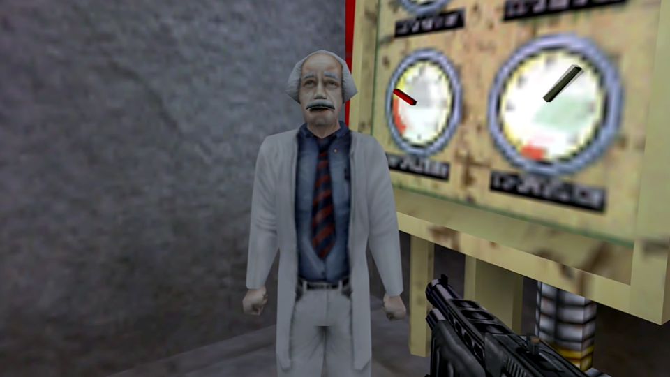
--fit fill (Adaptive Ambient Wings)
2844×1600 FG + 498px Wings
Preserves 100% of a narrower image without cropping the character or instruments, and fills the left/right ultrawide margins with a downscaled, Gaussian-blurred, 25% darkened ambient backdrop blended across a 24px feather ramp.
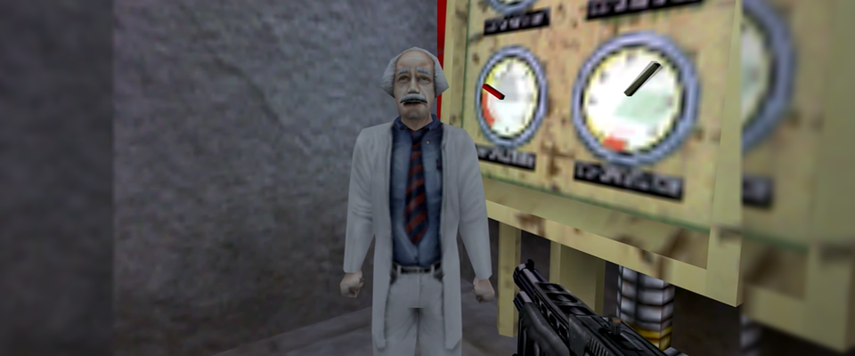

--fit cover (Default Center-Crop)
Lanczos3 Scale & Crop
Scales uniformly until the entire target canvas is covered and crops overflow from the center. On 3840×1600, top and bottom margins are cropped; on 800×600, left and right edges are cropped.
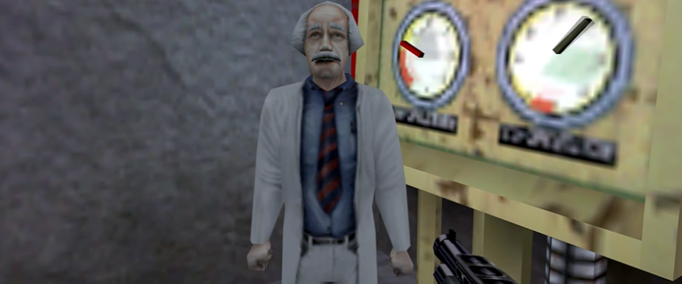
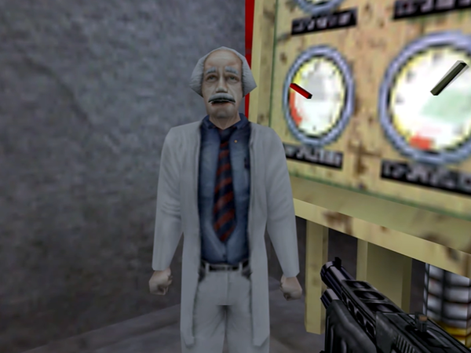
--fit contain --bg-color "#101824"
Zero Crop + Solid Pad
Fits the entire image inside the canvas without cropping or distortion, filling empty pillarbox bars (on 3840×1600) or letterbox bars (on 800×600) with your exact hex color (#RRGGBB or #RGB).
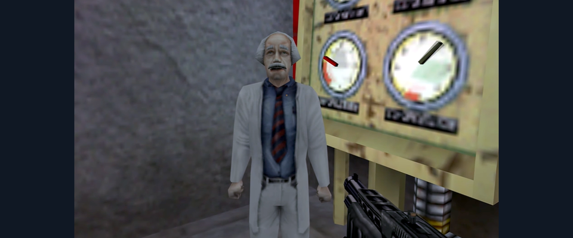
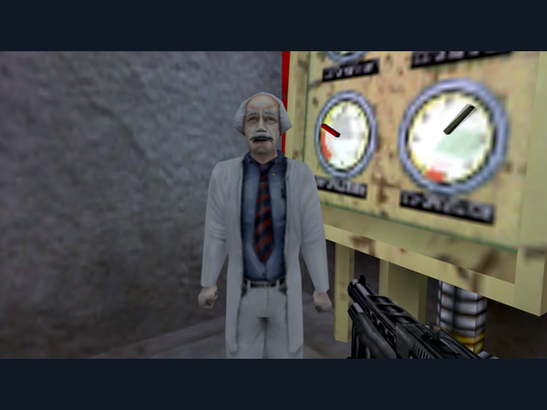
--fit stretch (Exact Canvas Warp)
Non-Uniform Lanczos3
Resizes both axes independently to fill 3840×1600 and 800×600 with zero cropping and zero padding. Notice how circular instruments and character proportions stretch on 21:9 and compress on 4:3.
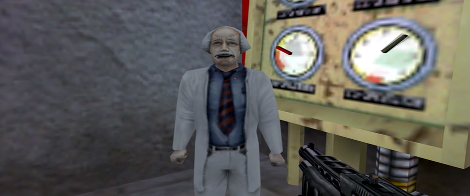
While most tiles are 256×256 (196,652 bytes), the bottom row of the HD grid uses 256×64 strips, and the Classic 800×600 grid uses 32×256 right-edge strips, 256×88 bottom strips, and a 32×88 bottom-right corner tile so the sum matches the exact resolution.
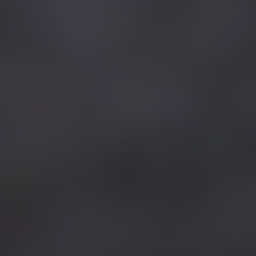
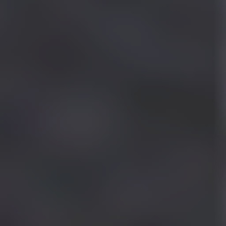
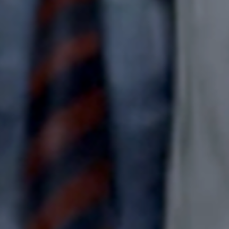
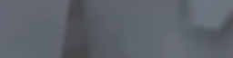
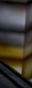
Interactive 117-Tile Grid & TGA Binary Inspector
Hover or click any tile across the 105-tile HD grid (15×7) or 12-tile Classic grid (4×3) to inspect its coordinates, layout entry, and TGA 2.0 byte layout.
Quickstart Integration
Install the single-binary CLI from crates.io or GitHub Releases and convert any wallpaper into your Half-Life or mod directory in milliseconds.
cargo install hl-background-cli
hl-background-cli wallpaper.png --fit fill -o "C:/Program Files (x86)/Steam/steamapps/common/Half-Life/valve/resource"
hl-background-cli mod_logo.png --fit contain --bg-color "#101824" -o ./my_mod/resource
Embeddable Rust Library (hl_background_cli)
Import hl-background-cli with default-features = false to drop the CLI argument parser (argh) and generate background sets on disk or stream individual TGA tiles in memory.
# Cargo.toml
[dependencies]
hl-background-cli = { version = "0.1", default-features = false }
// src/main.rs
use hl_background_cli::{generate, Config, FitMode};
fn main() -> Result<(), hl_background_cli::Error> {
let config = Config::new("artwork.png", "./valve/resource")
.with_fit(FitMode::Fill)
.with_update_liblist(true);
let report = generate(&config)?;
println!("{} TGA tiles written", report.tiles_written);
Ok(())
}use hl_background_cli::{
encode_tile_region, fit_image, hd_tiles,
FitMode, HD_HEIGHT, HD_WIDTH,
};
fn encode_first_tile(img: &hl_background_cli::image::DynamicImage) -> Vec<u8> {
let canvas = fit_image(
img, HD_WIDTH, HD_HEIGHT, FitMode::Fill, [0, 0, 0]
);
let tile = &hd_tiles()[0]; // 21_9_1_a_loading.tga (256x256)
let mut tga_bytes = Vec::with_capacity(196_652);
encode_tile_region(&mut tga_bytes, &canvas, tile).unwrap();
tga_bytes
}CLI Options & Library Reference
| Option / API Symbol | Default | Type | Description |
|---|---|---|---|
| <input> | required | PathBuf |
Source image path (PNG, JPEG, WebP, or BMP). |
| -o, --output-dir <DIR> | ./output |
PathBuf |
Destination directory. Appends background/ for TGA files unless path already ends with background. |
| --fit <MODE> | cover |
FitMode |
Sizing strategy: cover, fill (alias adaptive), contain, or stretch. |
| --bg-color <HEX> | #000000 |
[u8; 3] |
Solid padding color for contain mode (accepts #RRGGBB or #RGB). |
| --skip-layouts | false |
bool |
Skip writing the 4 layout .txt descriptor files (only writes the 117 TGAs). |
| --classic-layout | false |
LayoutMode |
Point BackgroundLayout.txt and BackgroundLoadingLayout.txt to the 800×600 grid instead of HD. |
| --no-liblist | false |
bool |
Do not automatically enable hd_background "1" in a nearby liblist.gam. |
| -q, --quiet | false |
flag |
Suppress standard progress output and print only errors. |
| encode_tile_region | fn | Result<()> |
Streams any rectangular Tile from an RgbImage canvas as an uncompressed bottom-to-top TGA 2.0. |